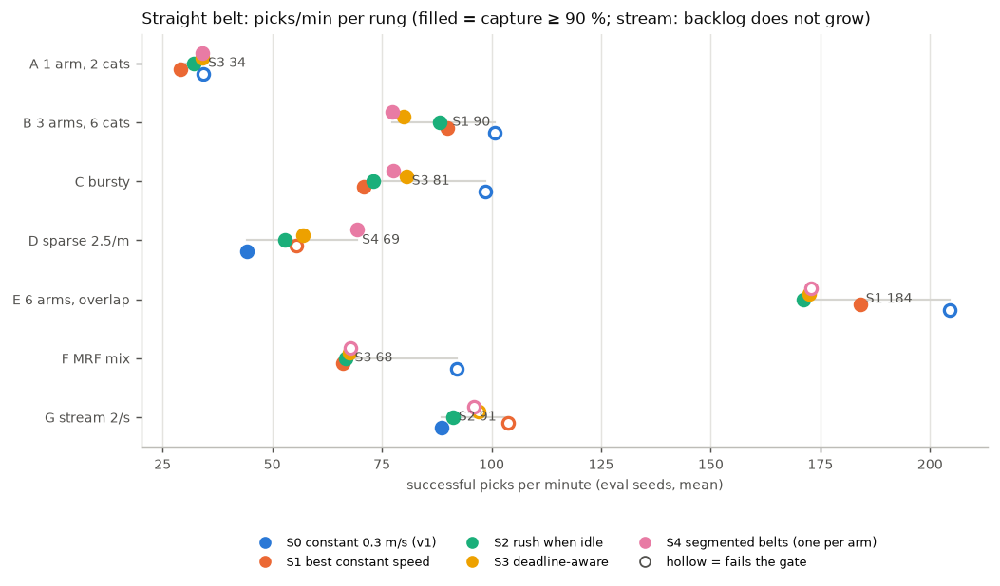
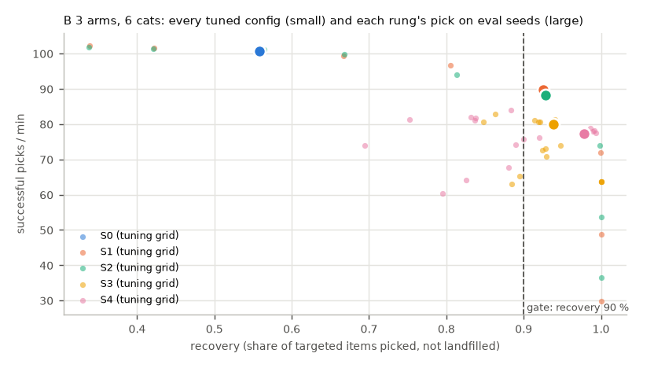
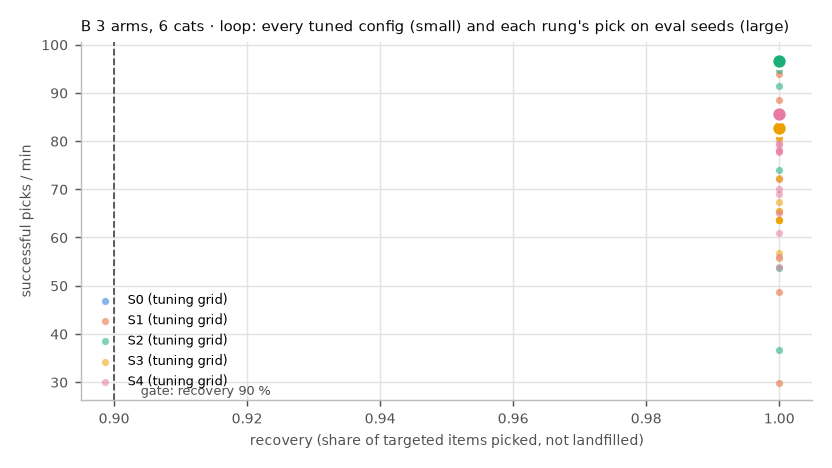
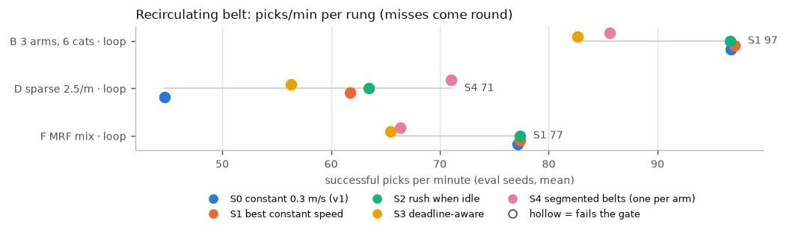
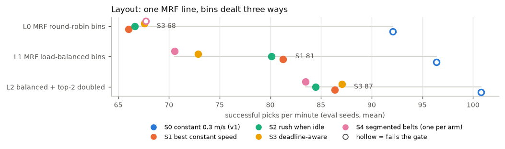
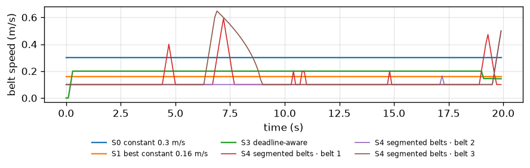
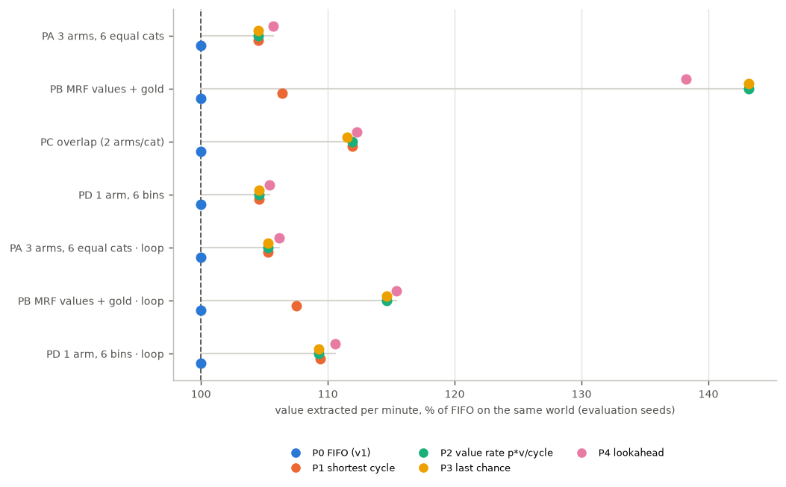

belt-sim
A fast, headless conveyor-line simulator for two black boxes: how fast should the belt run, and which item should each robot pick next.
GitHubW&B · Speed controlW&B · Pick schedulingOpen a replay in Rerun
- Straight, dense belts: a well-chosen constant speed is hard to beat once the robots are fast; deadline-aware speed wins where arrivals are uneven, and one belt per gantry wins where the belt is sparse (69 vs 56 picks/min for the best constant speed).
- Recirculating belts: run as fast as the robots can still grasp - a miss just comes round; holding the belt for items costs throughput (world B: 97 picks/min at 0.5 m/s vs 83 deadline-aware).
- Pick order: shortest cycle first beats FIFO by 4-12 % on equal-value worlds; value rate (p · value ÷ cycle) takes 100 % of rare high-value items vs FIFO's 44 % (+43 % value/min). On a loop FIFO makes items circle 2.5 laps before a pick vs 1.6 for shortest cycle.
The model
- Belt: a flat 2D strip (x along, y across) split into N segments with independent speeds (forward or reverse, acceleration-limited), fed by a hopper (items per metre of travel: faster belt, more items) or a stream (items per second whatever the belt does), optionally recirculating (items reaching the end go back to the head).
- Robots: Cartesian gantries. x and y axes each have a max speed and acceleration (default 1.5 m/s, 6 m/s²); every move is a pair of trapezoidal profiles and lasts as long as the slower axis. The gripper intercepts the moving item, tracks it through a 0.35 s grasp (plunge, close, lift) and drops it in the bin for its category (up to 6 bins per gantry).
- Items: category, value, a per-item grasp probability the scheduler knows, and a hard belt-speed line (0.5 m/s) above which no grasp is tried. All random draws come from the seed, so every policy sees the same items and the same coin flips.
- Scores: successful picks/min; capture = picked ÷ (picked + lost) of items a robot could take; diversion = picked ÷ entered; value/min for scheduling. Straight belt: best picks/min with capture ≥ 90 % (else "run flat out" wins and everything goes to landfill). Recirculating belt: plain picks/min, because a miss comes round again.
- Speed: ≈ 277× real time for a 3-gantry line on one core of a busy machine. Knobs are tuned on seeds 0-2 and scored on seeds 100-104.
Belt speed control
S0 constant 0.3 m/s → S1 best constant → S2 rush when no robot has anything pickable (and brake back in time) → S3 also slow down so an item only this robot can take is still in reach when it is free → S4 one belt per gantry, each running S3 for its own robot, with zone control at the hand-offs.






All numbers
| world | rung | picks/min | capture | diversion | gate | belt m/s | arms busy | laps/pick | tuned knobs |
|---|---|---|---|---|---|---|---|---|---|
| A 1 arm, 2 cats | S0 constant 0.3 m/s (v1) | 34.3 ± 0.4 | 32 % | 32 % | ✗ | 0.30 | 100 % | v 0.3 | |
| S1 best constant speed | 29.0 ± 1.3 | 100 % | 99 % | ✓ | 0.08 | 83 % | v 0.08 | ||
| S2 rush when idle | 32.0 ± 0.5 | 100 % | 99 % | ✓ | 0.09 | 94 % | v cruise 0.08 | ||
| S3 deadline-aware | 34.2 ± 0.1 | 92 % | 92 % | ✓ | 0.10 | 99 % | protect n 2, v cruise 0.1, v floor 0.1 | ||
| S4 segmented belts (one per arm) | 34.2 ± 0.1 | 92 % | 92 % | ✓ | 0.10 | 99 % | protect n 2, v cruise 0.1, v floor 0.1 | ||
| B 3 arms, 6 cats | S0 constant 0.3 m/s (v1) | 100.8 ± 0.7 | 56 % | 56 % | ✗ | 0.30 | 96 % | v 0.3 | |
| S1 best constant speed | 89.9 ± 0.9 | 93 % | 93 % | ✓ | 0.16 | 84 % | v 0.16 | ||
| S2 rush when idle | 88.2 ± 2.2 | 93 % | 93 % | ✓ | 0.16 | 84 % | v cruise 0.16 | ||
| S3 deadline-aware | 79.9 ± 1.7 | 94 % | 94 % | ✓ | 0.14 | 82 % | protect n 2, v cruise 0.2, v floor 0.1 | ||
| S4 segmented belts (one per arm) | 77.4 ± 2.2 | 98 % | 98 % | ✓ | 0.13 | 78 % | protect n 1, v cruise 0.1, v floor 0.1 | ||
| C bursty | S0 constant 0.3 m/s (v1) | 98.6 ± 0.3 | 54 % | 54 % | ✗ | 0.30 | 93 % | v 0.3 | |
| S1 best constant speed | 70.9 ± 1.8 | 98 % | 98 % | ✓ | 0.12 | 66 % | v 0.12 | ||
| S2 rush when idle | 72.9 ± 1.5 | 98 % | 98 % | ✓ | 0.12 | 70 % | v cruise 0.12 | ||
| S3 deadline-aware | 80.6 ± 2.5 | 90 % | 91 % | ✓ | 0.15 | 82 % | protect n 2, v cruise 0.45, v floor 0.1 | ||
| S4 segmented belts (one per arm) | 77.5 ± 1.8 | 97 % | 97 % | ✓ | 0.13 | 77 % | protect n 1, v cruise 0.1, v floor 0.1 | ||
| D sparse 2.5/m | S0 constant 0.3 m/s (v1) | 44.3 ± 0.7 | 97 % | 97 % | ✓ | 0.30 | 43 % | v 0.3 | |
| S1 best constant speed | 55.5 ± 0.9 | 90 % | 90 % | ✗ | 0.40 | 53 % | v 0.4 | ||
| S2 rush when idle | 52.9 ± 0.6 | 97 % | 97 % | ✓ | 0.36 | 52 % | v cruise 0.3 | ||
| S3 deadline-aware | 57.0 ± 1.0 | 92 % | 92 % | ✓ | 0.40 | 57 % | protect n 2, v cruise 0.45, v floor 0.1 | ||
| S4 segmented belts (one per arm) | 69.3 ± 1.9 | 92 % | 92 % | ✓ | 0.49 | 70 % | protect n 2, v cruise 0.3, v floor 0.1 | ||
| E 6 arms, overlap | S0 constant 0.3 m/s (v1) | 204.4 ± 0.8 | 71 % | 71 % | ✗ | 0.30 | 97 % | v 0.3 | |
| S1 best constant speed | 184.2 ± 1.3 | 96 % | 96 % | ✓ | 0.20 | 86 % | v 0.2 | ||
| S2 rush when idle | 171.0 ± 5.0 | 97 % | 97 % | ✓ | 0.18 | 82 % | v cruise 0.2 | ||
| S3 deadline-aware | 172.4 ± 3.7 | 95 % | 95 % | ✓ | 0.19 | 86 % | protect n 1, v cruise 0.3, v floor 0.1 | ||
| S4 segmented belts (one per arm) | 172.8 ± 4.4 | 90 % | 90 % | ✗ | 0.20 | 87 % | protect n 2, v cruise 0.3, v floor 0.1 | ||
| F MRF mix | S0 constant 0.3 m/s (v1) | 92.1 ± 1.0 | 55 % | 43 % | ✗ | 0.30 | 89 % | v 0.3 | |
| S1 best constant speed | 66.0 ± 0.7 | 98 % | 76 % | ✓ | 0.12 | 63 % | v 0.12 | ||
| S2 rush when idle | 66.7 ± 1.1 | 98 % | 76 % | ✓ | 0.12 | 65 % | v cruise 0.12 | ||
| S3 deadline-aware | 67.6 ± 1.4 | 91 % | 71 % | ✓ | 0.13 | 71 % | protect n 2, v cruise 0.2, v floor 0.1 | ||
| S4 segmented belts (one per arm) | 67.7 ± 1.3 | 90 % | 70 % | ✗ | 0.13 | 71 % | protect n 2, v cruise 0.2, v floor 0.1 | ||
| G stream 2/s | S0 constant 0.3 m/s (v1) | 88.5 ± 1.3 | 73 % | 73 % | ✓ | 0.30 | 84 % | v 0.3 | |
| S1 best constant speed | 103.9 ± 0.2 | 87 % | 87 % | ✗ | 0.08 | 95 % | v 0.08 | ||
| S2 rush when idle | 91.3 ± 3.0 | 75 % | 75 % | ✓ | 0.14 | 91 % | v cruise 0.16 | ||
| S3 deadline-aware | 97.0 ± 2.9 | 81 % | 81 % | ✗ | 0.09 | 94 % | protect n 1, v cruise 0.1, v floor 0.1 | ||
| S4 segmented belts (one per arm) | 96.0 ± 2.5 | 80 % | 80 % | ✗ | 0.09 | 94 % | protect n 1, v cruise 0.1, v floor 0.1 | ||
| B 3 arms, 6 cats · loop | S0 constant 0.3 m/s (v1) | 96.7 ± 1.3 | 100 % | 100 % | loop | 0.30 | 92 % | 1.07 | v 0.3 |
| S1 best constant speed | 97.1 ± 1.1 | 100 % | 99 % | loop | 0.50 | 94 % | 2.47 | v 0.5 | |
| S2 rush when idle | 96.7 ± 1.5 | 100 % | 100 % | loop | 0.30 | 93 % | 1.08 | v cruise 0.3 | |
| S3 deadline-aware | 82.6 ± 2.1 | 100 % | 100 % | loop | 0.15 | 84 % | 0.10 | protect n 2, v cruise 0.3, v floor 0.1 | |
| S4 segmented belts (one per arm) | 85.6 ± 2.6 | 100 % | 99 % | loop | 0.17 | 89 % | 0.28 | protect n 2, v cruise 0.3, v floor 0.1 | |
| D sparse 2.5/m · loop | S0 constant 0.3 m/s (v1) | 44.7 ± 1.0 | 100 % | 100 % | loop | 0.30 | 43 % | 0.04 | v 0.3 |
| S1 best constant speed | 61.7 ± 0.6 | 100 % | 100 % | loop | 0.50 | 60 % | 0.29 | v 0.5 | |
| S2 rush when idle | 63.5 ± 1.2 | 100 % | 100 % | loop | 0.53 | 61 % | 0.34 | v cruise 0.5 | |
| S3 deadline-aware | 56.3 ± 1.5 | 100 % | 100 % | loop | 0.39 | 57 % | 0.08 | protect n 2, v cruise 0.45, v floor 0.1 | |
| S4 segmented belts (one per arm) | 71.0 ± 3.0 | 100 % | 100 % | loop | 0.55 | 74 % | 0.22 | protect n 2, v cruise 0.45, v floor 0.1 | |
| F MRF mix · loop | S0 constant 0.3 m/s (v1) | 77.1 ± 1.1 | 100 % | 77 % | loop | 0.30 | 76 % | 1.86 | v 0.3 |
| S1 best constant speed | 77.4 ± 1.0 | 100 % | 78 % | loop | 0.50 | 77 % | 3.84 | v 0.5 | |
| S2 rush when idle | 77.3 ± 1.5 | 100 % | 78 % | loop | 0.40 | 76 % | 2.94 | v cruise 0.4 | |
| S3 deadline-aware | 65.5 ± 1.8 | 100 % | 76 % | loop | 0.16 | 72 % | 0.68 | protect n 1, v cruise 0.45, v floor 0.1 | |
| S4 segmented belts (one per arm) | 66.3 ± 1.7 | 100 % | 77 % | loop | 0.13 | 70 % | 0.25 | protect n 2, v cruise 0.3, v floor 0.1 | |
| L0 MRF round-robin bins | S0 constant 0.3 m/s (v1) | 92.1 ± 1.0 | 55 % | 43 % | ✗ | 0.30 | 89 % | v 0.3 | |
| S1 best constant speed | 66.0 ± 0.7 | 98 % | 76 % | ✓ | 0.12 | 63 % | v 0.12 | ||
| S2 rush when idle | 66.7 ± 1.1 | 98 % | 76 % | ✓ | 0.12 | 65 % | v cruise 0.12 | ||
| S3 deadline-aware | 67.6 ± 1.4 | 91 % | 71 % | ✓ | 0.13 | 71 % | protect n 2, v cruise 0.2, v floor 0.1 | ||
| S4 segmented belts (one per arm) | 67.7 ± 1.3 | 90 % | 70 % | ✗ | 0.13 | 71 % | protect n 2, v cruise 0.2, v floor 0.1 | ||
| L1 MRF load-balanced bins | S0 constant 0.3 m/s (v1) | 96.4 ± 0.6 | 58 % | 45 % | ✗ | 0.30 | 93 % | v 0.3 | |
| S1 best constant speed | 81.3 ± 1.8 | 91 % | 70 % | ✓ | 0.16 | 78 % | v 0.16 | ||
| S2 rush when idle | 80.1 ± 1.2 | 91 % | 70 % | ✓ | 0.16 | 78 % | v cruise 0.16 | ||
| S3 deadline-aware | 72.9 ± 1.3 | 91 % | 70 % | ✓ | 0.14 | 76 % | protect n 2, v cruise 0.3, v floor 0.1 | ||
| S4 segmented belts (one per arm) | 70.6 ± 2.6 | 91 % | 70 % | ✓ | 0.14 | 75 % | protect n 2, v cruise 0.2, v floor 0.1 | ||
| L2 balanced + top-2 doubled | S0 constant 0.3 m/s (v1) | 100.8 ± 0.5 | 60 % | 47 % | ✗ | 0.30 | 98 % | v 0.3 | |
| S1 best constant speed | 86.4 ± 1.5 | 97 % | 75 % | ✓ | 0.16 | 82 % | v 0.16 | ||
| S2 rush when idle | 84.5 ± 1.4 | 97 % | 75 % | ✓ | 0.16 | 82 % | v cruise 0.16 | ||
| S3 deadline-aware | 87.1 ± 0.9 | 90 % | 70 % | ✓ | 0.17 | 90 % | protect n 2, v cruise 0.45, v floor 0.1 | ||
| S4 segmented belts (one per arm) | 83.5 ± 3.1 | 93 % | 71 % | ✓ | 0.16 | 89 % | protect n 2, v cruise 0.2, v floor 0.1 |
Pick scheduling
Constant belt, more items than the robots can clear, so they must choose. P0 FIFO → P1 shortest cycle → P2 value rate (p · value ÷ cycle) → P3 last chance (an item a downstream robot could still take counts less) → P4 lookahead (plan 2-3 picks ahead, keep the first). Straight belts are scored against a time-indexed LP upper bound (clairvoyant, HiGHS) and a tighter planning reference; recirculating belts have no such bound (re-entry depends on what the robots did).

All numbers
| world | rung | value / min | picks/min | of LP reference | gold picked | tuned knobs |
|---|---|---|---|---|---|---|
| PA 3 arms, 6 equal cats | P0 FIFO (v1) | 101.1 | 101.1 | 78 % | - | |
| P1 shortest cycle | 105.6 | 105.6 | 81 % | - | ||
| P2 value rate p*v/cycle | 105.6 | 105.6 | 81 % | - | ||
| P3 last chance | 105.6 | 105.6 | 81 % | downstream weight 0.2 | ||
| P4 lookahead | 106.8 | 106.8 | 82 % | depth 3, downstream weight 0.2 | ||
| PB MRF values + gold | P0 FIFO (v1) | 1.260 $ | 87.9 | 68 % | 44 % of 16 | - |
| P1 shortest cycle | 1.340 $ | 90.6 | 68 % | 44 % of 16 | - | |
| P2 value rate p*v/cycle | 1.804 $ | 88.3 | 91 % | 100 % of 16 | - | |
| P3 last chance | 1.804 $ | 88.3 | 91 % | 100 % of 16 | downstream weight 0.2 | |
| P4 lookahead | 1.742 $ | 90.1 | 90 % | 94 % of 16 | depth 2, downstream weight 0.2 | |
| PC overlap (2 arms/cat) | P0 FIFO (v1) | 98.6 | 98.6 | 73 % | - | |
| P1 shortest cycle | 110.3 | 110.3 | 81 % | - | ||
| P2 value rate p*v/cycle | 110.3 | 110.3 | 81 % | - | ||
| P3 last chance | 109.9 | 109.9 | 81 % | downstream weight 0.8 | ||
| P4 lookahead | 110.7 | 110.7 | 82 % | depth 2, downstream weight 0.2 | ||
| PD 1 arm, 6 bins | P0 FIFO (v1) | 33.5 | 33.5 | 77 % | - | |
| P1 shortest cycle | 35.0 | 35.0 | 81 % | - | ||
| P2 value rate p*v/cycle | 35.0 | 35.0 | 81 % | - | ||
| P3 last chance | 35.0 | 35.0 | 81 % | downstream weight 0.2 | ||
| P4 lookahead | 35.3 | 35.3 | 81 % | depth 2, downstream weight 0.2 | ||
| PA 3 arms, 6 equal cats · loop | P0 FIFO (v1) | 103.6 | 103.6 | n/a (loop) | - | |
| P1 shortest cycle | 109.1 | 109.1 | n/a (loop) | - | ||
| P2 value rate p*v/cycle | 109.1 | 109.1 | n/a (loop) | - | ||
| P3 last chance | 109.1 | 109.1 | n/a (loop) | downstream weight 0.2 | ||
| P4 lookahead | 110.0 | 110.0 | n/a (loop) | depth 2, downstream weight 0.2 | ||
| PB MRF values + gold · loop | P0 FIFO (v1) | 1.256 $ | 82.9 | n/a (loop) | 57 % of 14 | - |
| P1 shortest cycle | 1.351 $ | 87.7 | n/a (loop) | 64 % of 14 | - | |
| P2 value rate p*v/cycle | 1.440 $ | 85.8 | n/a (loop) | 100 % of 14 | - | |
| P3 last chance | 1.440 $ | 85.8 | n/a (loop) | 100 % of 14 | downstream weight 0.2 | |
| P4 lookahead | 1.449 $ | 86.4 | n/a (loop) | 100 % of 14 | depth 2, downstream weight 0.2 | |
| PD 1 arm, 6 bins · loop | P0 FIFO (v1) | 33.7 | 33.7 | n/a (loop) | - | |
| P1 shortest cycle | 36.8 | 36.8 | n/a (loop) | - | ||
| P2 value rate p*v/cycle | 36.8 | 36.8 | n/a (loop) | - | ||
| P3 last chance | 36.8 | 36.8 | n/a (loop) | downstream weight 0.2 | ||
| P4 lookahead | 37.2 | 37.2 | n/a (loop) | depth 2, downstream weight 0.2 |
Drill into a replay
Each button opens one 40 s episode in Rerun's web viewer: the line in 3D on a sim-time timeline, with the live stats beside it (rolling and cumulative picks/min, capture, belt speed per segment, backlog, robots busy) and a log of every pick and loss. Or download the .rrd and open several in the native viewer to compare.
- B 3 arms, 6 cats S0 .rrd
- B 3 arms, 6 cats S1 .rrd
- B 3 arms, 6 cats S3 .rrd
- B 3 arms, 6 cats S4 .rrd
- B 3 arms, 6 cats · loop S0 .rrd
- B 3 arms, 6 cats · loop S4 .rrd
- PB MRF values + gold P0 .rrd
- PB MRF values + gold P2 .rrd
- PB MRF values + gold · loop P0 .rrd
- PB MRF values + gold · loop P2 .rrd
Locally: uv run belt-sim rerun --scenario "B 3 arms, 6 cats" (Rerun) or uv run belt-sim viser (3D gantries in the browser, policy dropdown).
Checked against
An independent event-driven constant-speed line sim (vendored in tests/oracle_line_sim.py): with the same rules the two must agree on capture, and a 15 % longer cycle must fail that comparison.
| items/s, belt m/s, arms, window m, cycle s, reach s, p | reference sim | this engine |
|---|---|---|
| 5, 1, 3, 0.8, 1.5, 0.5, 0.7 | 0.279 | 0.271 |
| 2, 0.2, 2, 1, 2.98, 1.54, 0.95 | 0.323 | 0.320 |
| 3, 0.4, 4, 1, 1.6, 0.6, 0.9 | 0.727 | 0.726 |
| 1, 0.3, 1, 1, 2, 0.5, 0.9 | 0.423 | 0.435 |
Tests also pin item conservation, common random numbers, no policy beating the capacity ceiling, grasps only inside the gantry's stroke and below the tracking speed (through the whole dwell), hopper and stream rates, belt hand-offs, recirculation, the LP bound dominating every policy, and that no speed policy stalls the line.
Run it
git clone https://github.com/zacharyyamaoka/belt-sim && cd belt-sim uv sync uv run belt-sim ladder all # tune + score both ladders -> docs/results/*.json uv run belt-sim rerun # replays with live stats in Rerun uv run belt-sim wandb # one W&B run per tried config uv run python docs/build_site.py # this page
MIT licence. Built from a design note on conveyor speed control and FIFO scheduling for robotic waste sorting.